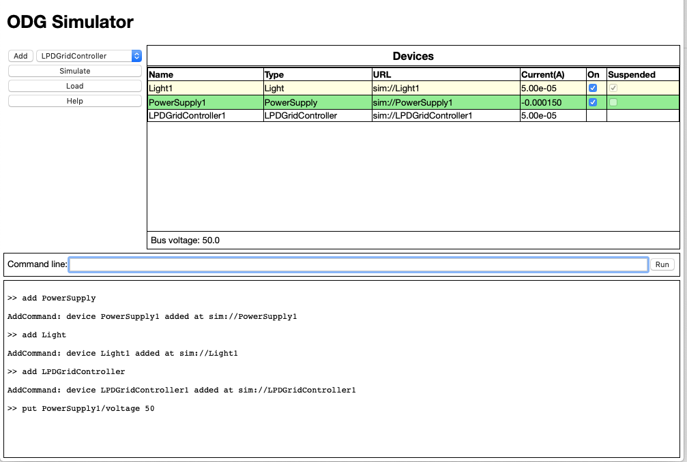

Bus Management
One of the devices that can be added is an LPDGridController. When this device is added to the bus, other managed devices connect to it and begin managed operation.

The LPDGridController and managed devices operate in an (overly) simplified version of the Local Power Distribution algorithm described by Nordman and Christensen. In the algorithm used in this version of the simulator, grid controller device publishes a power price that is observed by the other devices. Managed load devices (currently only Light) have a price threshold such that if the price published by the grid controller exceeds this threshold, they go into a suspended state and essentially disconnect from the grid. Managed source devices (currently only Power Supply) also have a threshold but, in their case, they suspend if the published price drops below their threshold price.
In the current implementation, the grid controller does not directly control the other devices. It merely changes its published price to attempt to create its desired grid state. The implementation uses a very trivial algorithm. The grid controller observes the bus and tries to keep the bus voltage at a particular set point (48V). If the bus voltage goes below the set point, it raises the price in an attempt to reduce load. If the bus voltage goes above the set point, it lowers the price in an attempt to reduce supply.
This behavior can be observed by using a command line to force the power source to a voltage above the grid controller's set point with the command line:
put PowerSupply1/voltage 50
This causes the grid controller to raise its price. The light observes that the new price is above its price limit and goes into a suspended state.
The various parameters of each device can be changed using the command line and the effects observed in the devices table.